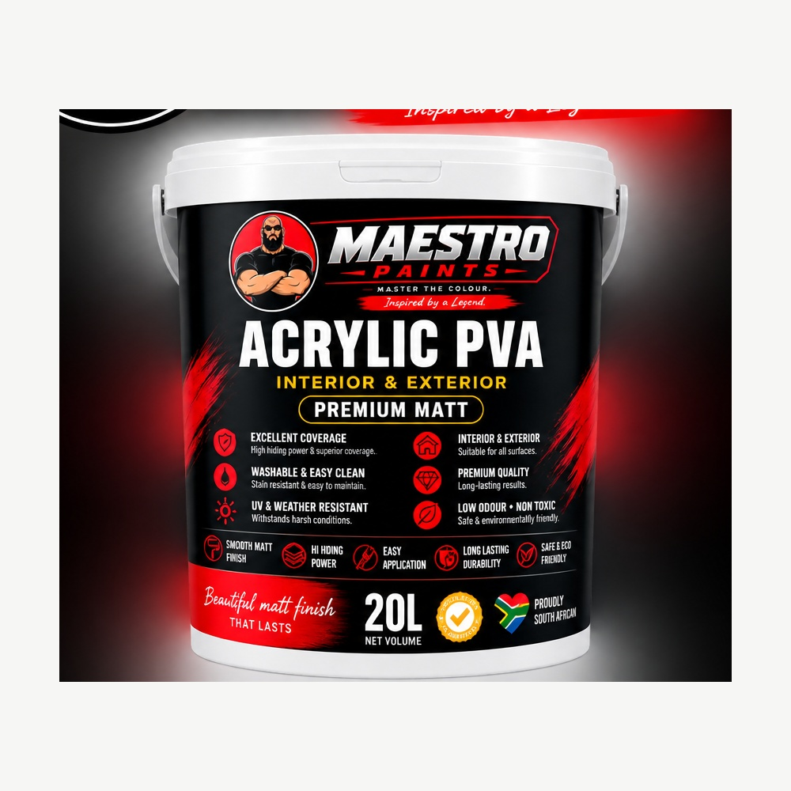

MAESTRO PAINTS
ACRYLIC PVA
INTERIOR & EXTERIOR · PREMIUM MATT
A premium matt coating designed for interior and exterior applications, developed for dependable coverage and a clean, durable finish.
BUILT FOR PERFORMANCE
PRODUCT OVERVIEW
Maestro Acrylic PVA is positioned as an interior and exterior premium matt coating. The current approved brand artwork highlights excellent coverage, washability, UV and weather resistance, premium quality and low odour.
Detailed technical values below must be confirmed against the final Maestro technical data sheet before publication.
KEY BENEFITS
WHY CHOOSE ACRYLIC PVA?
- High hiding power and strong coverage
- Washable and easy to maintain
- Designed to withstand UV and weather exposure
- Suitable for interior and exterior applications
- Premium-quality positioning
- Water-based, low-odour positioning
APPLICATION
PREPARATION & USE
Surface preparation, dilution, application conditions, drying time and recommended coat system should be taken directly from Maestro's approved technical documentation.
PRODUCT DOCUMENTS
DOWNLOADS
Technical and safety documents can be linked here once supplied. In Shopify, these can later be managed as product metafields/files.
NEED HELP?
LET'S FIND THE RIGHT SOLUTION.
Speak to the Maestro Paints team about your project, surface and application requirements.